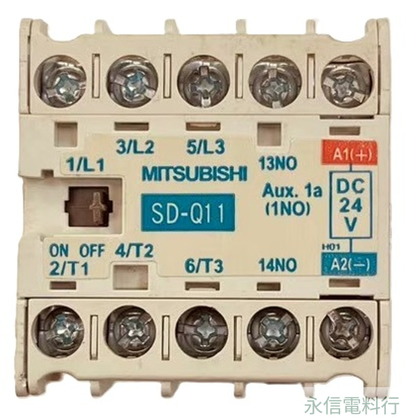

五張照片均來自使用者本次提供的商品實拍，網站版已加上低干擾永信電料行識別；照片僅供外觀及銘牌核對，實際選用仍請查證完整原廠規格。
三菱電機 Mitsubishi Electric
電磁接觸器｜直流控制
SD-Q11 DC24V／1a（1NO）
實物正面照片可辨識 Mitsubishi SD-Q11、DC24V 及 Aux. 1a（1NO）輔助接點標示；側面銘牌另可辨識 SD-Q11 與 Made in Japan。本頁提供實拍角度、端子配置外觀及詢價核對資訊。
產品型號SD-Q11
控制／線圈電壓DC24V（正面標示）
輔助接點1a（1NO）
主接點端子標示1/L1、3/L2、5/L3／2/T1、4/T2、6/T3
產地Made in Japan（側面銘牌）
實物照片5 張
規格核對提醒
「1a」是輔助接點型式，不代表額定電流 1A。電流容量、AC-1／AC-3 使用類別、線圈消耗功率、尺寸與替代相容性，請依完整原廠資料及現場需求確認，不可由照片外觀直接推定。
本網站不顯示即時庫存、價格或交期，實際供應情況請洽詢。
PHOTO-VERIFIED IDENTIFICATION
實物辨識與核對事項
品牌三菱電機 Mitsubishi Electric
完整型號SD-Q11
線圈標示DC 24 V；端子 A1(+)／A2(-)
輔助接點標示Aux. 1a (1NO)；13NO／14NO
三組主接點端子1/L1、3/L2、5/L3；2/T1、4/T2、6/T3
產地標示Made in Japan
照片來源使用者提供實物照片，共五張
額定工作電流／替代相容性未於本頁核定；詢價前須按原廠完整資料核對
即使外觀、端子排列與控制電壓相似，仍須核對安裝空間、線圈極性、主輔接點組合、工作負載及必要附件，不能據此判斷可直接互換。